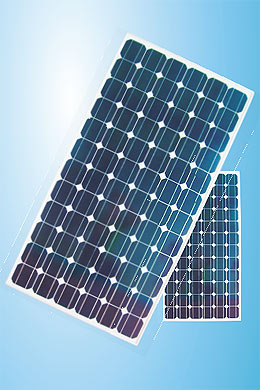
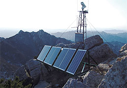
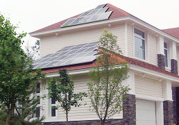
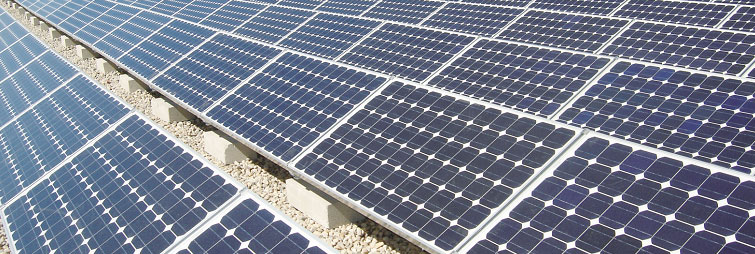

Немного о фотоэлектрике

Солнечная батарея (фотоэлектрический преобразователь, фотоэлектрический модуль, фотоэлектрическая панель, солнечная панель) – это устройство для преобразования солнечной энергии (энергии света) в электрическую энергию.
Наибольшую популярность среди солнечных батарей получили фотоэлектрические модули на основе монокристаллического кремния: сравнительно высокий коэффициент полезного действия, надежность и долговечность.

Преимущества фотоэлектрических панелей (модулей) Himin Solar:- Высокая эффективность, надёжность и долговечность.
- Диапазон рабочей температуры от -40 °C до +85 °C.
- Материал (фотовольтаические ячейки) протестирован на высокоточном современном оборудовании.
- Срок эксплуатации - свыше 25 лет.
- Выходная мощность - не менее 90% в течение первых 10 лет, и не менее 80% в течение 25 лет.
- В каждой панели (модуле) установлены 3 обходных диода для избежания солнечного перегрева ячеек (эффект «горячей точки») или частичного затемнения.
- Высокая механическая прочность: выдерживают попадание града диаметром 25 мм.
- Имеют сертификаты СЕ, TUV (IEC 61215 Edition II, IEC 61730 I и II), ISO 9001 и другие.
Солнечные батареи вырабатывают постоянный ток, который может быть использован различными методами:
- вырабатываемая солнечной батареей электрическая энергия может быть использована напрямую: например, для приведения в работу скважинного насоса, перекачивания воды или насоса для фонтанов;
- вырабатываемый солнечными батареями постоянный ток может заряжать аккумуляторные батареи, из которых накопленная энергия по мере необходимости используется в течение светового дня, вечером и ночью: например для освещения дома или придомовой территории при помощи лампочек постоянного тока;
- вырабатываемый солнечными батареями постоянный ток может заряжать аккумуляторные батареи, далее при помощи инвертора преобразовываться в переменный ток (110, 220 или 380В), и использоваться по мере необходимости в течение светового дня, вечером и ночью: например для освещения, для электроснабжения всех или отдельной группы потребителей электроэнергии дома, яхты, передвижной дачи и т.п.
Сфера применения солнечных батарей
- для объектов, которые удалены от линий электропередач и прокладка линий электропередач невозможна или связана с большими затратами, солнечные батареи могут выполнять функцию системы автономного электроснабжения;
- для объектов уже подключенных к электросетям, солнечные батареи могут выполнять функцию системы резервного электроснабжения;
- солнечные батареи могут снабжать электроэнергией группу автономных потребителей: системы автономного уличного освещения, системы автономного электроснабжения оборудования котельной и насосного оборудования двухконтурной системы на основе солнечных коллекторов.


- Абсолютная независимость. При установке индивидуальной фотоэлектрической системы нет необходимости в подводе электрических сетей, дополнительных затрат на разрешительную документацию, затрат на оплату счетов на электроэнергию. Фотоэлектрическая система может дать полную независимость от перебоев в электроснабжении, от роста тарифов и ограничения подключаемых мощностей.
- Долговечность. Срок службы фотоэлектрических модулей как основных элементов фотоэлектрической системы составляет от 20 до 50 лет. Сделав единоразовые инвестиции в фотоэлектрическую систему, Вы и ваши дети навсегда забудете о проблемах связанных с централизованным электроснабжением.
- Легкость в использовании. Фотоэлектрические системы работают полностью автоматически, поэтому использование таких систем не требует никаких специальных навыков и такие системы не требуют постоянного внимания пользователя.
- Экологическая безопасность. Солнечная энергия является абсолютно безопасной для окружающей среды и человека. Используя солнечную энергию Вы делаете свой вклад в экологию планеты и подаете хороший пример окружающим, ведь использование солнечной энергии и забота об окружающей среде являются нормой в цивилизованном обществе.
